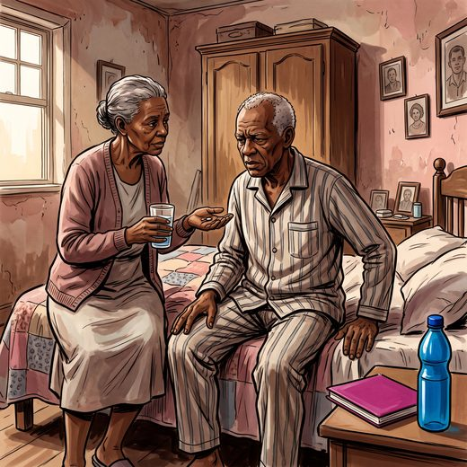

Consulta rápida à beira do leito
Condutas, doses e interações.
Referências da aula · 5
- 2023 American Geriatrics Society Beers Criteria® Update Expert Panel. American Geriatrics Society 2023 updated AGS Beers Criteria® for potentially inappropriate medication use in older adults. J Am Geriatr Soc. 2023;71(7):2052-81. PMID 37139824. doi:10.1111/jgs.18372.PubMedDOI
- Fallon M, Giusti R, Aielli F, Hoskin P, Rolke R, Sharma M, et al. Management of cancer pain in adult patients: ESMO Clinical Practice Guidelines. Ann Oncol. 2018;29(Suppl 4):iv166-91. PMID 30052758. doi:10.1093/annonc/mdy152.PubMedDOI
- Finnerup NB, Attal N, Haroutounian S, McNicol E, Baron R, Dworkin RH, et al. Pharmacotherapy for neuropathic pain in adults: a systematic review and meta-analysis. Lancet Neurol. 2015;14(2):162-73. PMID 25575710. doi:10.1016/S1474-4422(14)70251-0.PubMedDOI
- Bouhassira D, Attal N, Alchaar H, Boureau F, Brochet B, Bruxelle J, et al. Comparison of pain syndromes associated with nervous or somatic lesions and development of a new neuropathic pain diagnostic questionnaire (DN4). Pain. 2005;114(1-2):29-36. PMID 15733628. doi:10.1016/j.pain.2004.12.010.PubMedDOI
- Academia Nacional de Cuidados Paliativos. Manual de Cuidados Paliativos ANCP. 2ª ed. ampl. atual. São Paulo: ANCP; 2012.